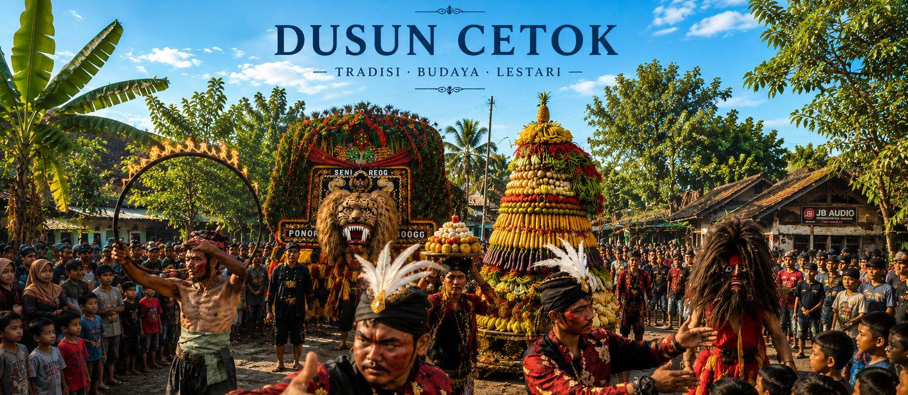
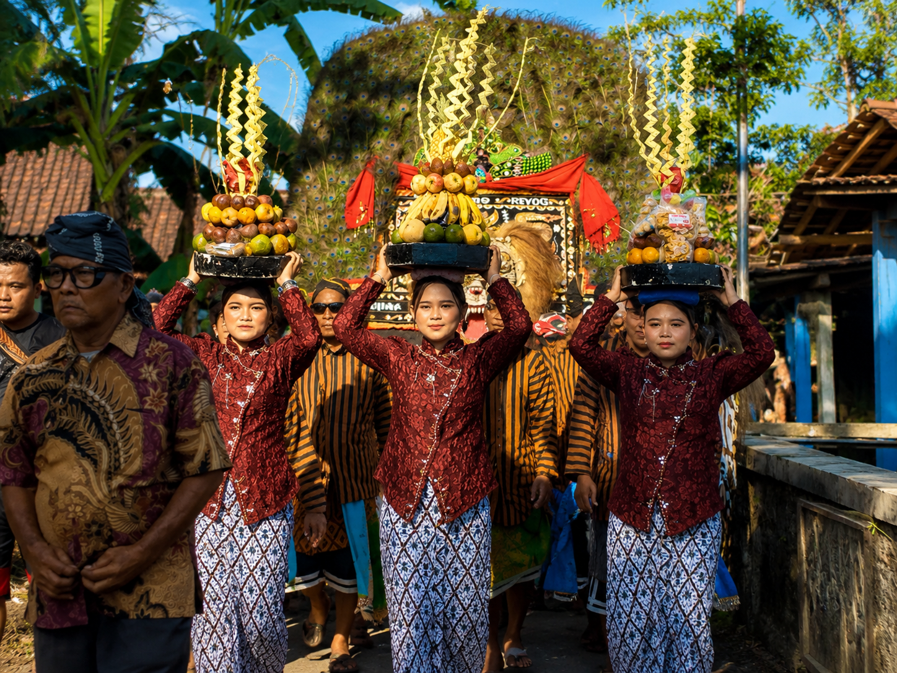
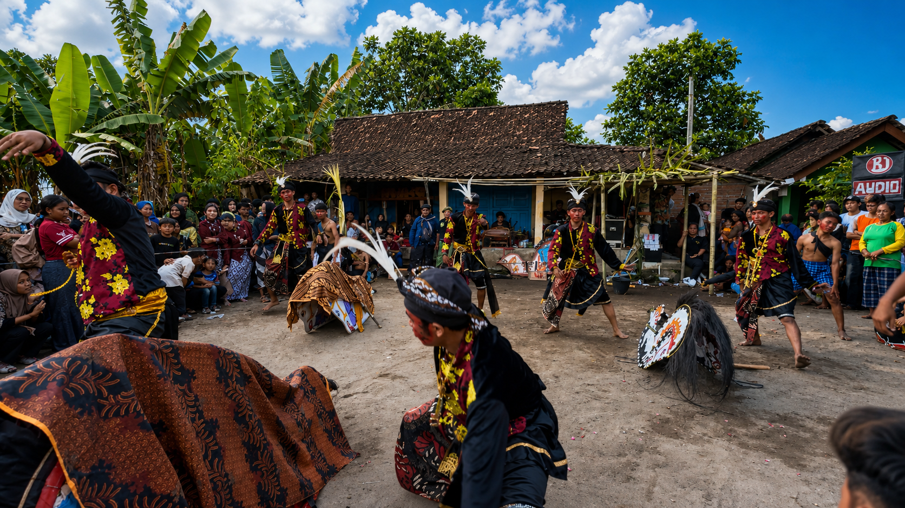
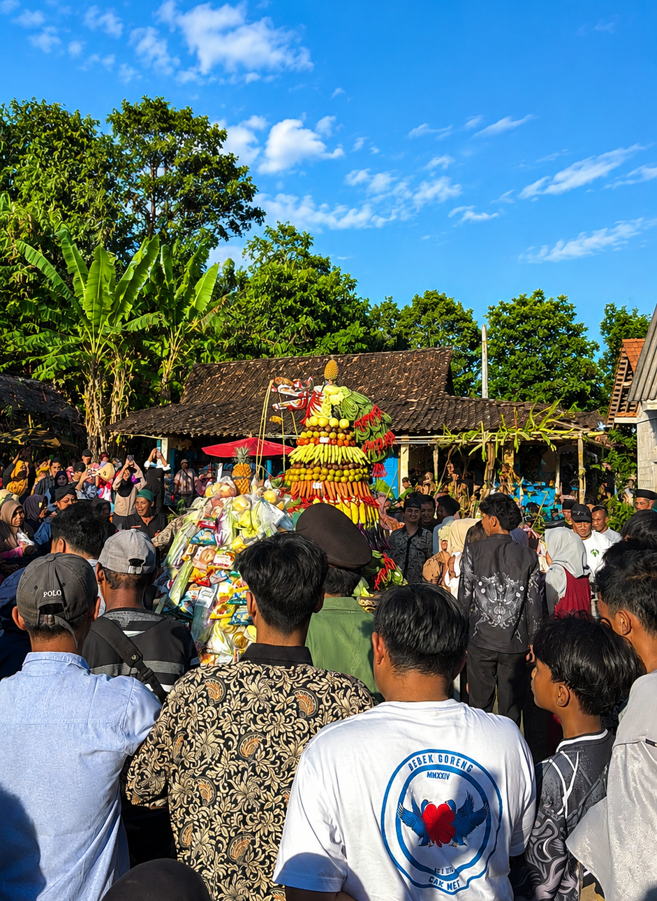
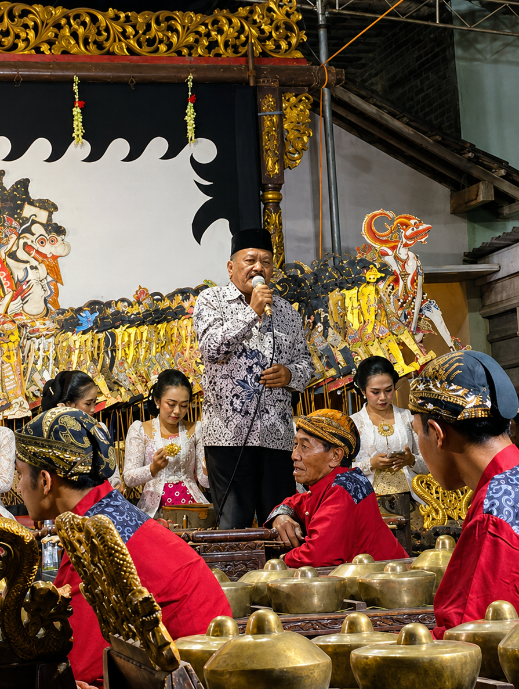

Dusun Cetok merupakan salah satu padukuhan yang terletak di wilayah Desa Baturan, dengan kekayaan potensi alam dan kerukunan warga yang terus terjaga. Lingkungan yang asri dipadukan dengan pesatnya perkembangan Usaha Mikro Kecil Menengah (UMKM) menjadikan Dusun Cetok memiliki dinamika perekonomian yang mandiri. Melalui sistem pemetaan digital (WebGIS) ini, kami berupaya menyajikan informasi geografis yang komprehensif, mulai dari letak fasilitas pelayanan masyarakat, hingga pemetaan potensi ekonomi warga, guna mendukung kemajuan infrastruktur dan kesejahteraan masyarakat Dusun Cetok ke depannya.
koleksi dokumentasi visual kegiatan dusun cetok





Cuplikan kegiatan dan profil Dusun Cetok
informasi persebaran fasilitas pelayanan masyarakat, sarana pendidikan, dan tempat ibadah di dusun cetok
mendukung roda perekonomian lokal melalui pemetaan lokasi usaha mikro, kecil, dan menengah milik warga
WebGIS (Web Geographic Information System) merupakan sistem informasi geografis berbasis web yang digunakan untuk menyajikan informasi spasial dalam bentuk peta digital yang dapat diakses secara interaktif melalui internet. WebGIS Dusun Cetok ini dibangun sebagai wujud nyata pengabdian kepada masyarakat. Platform digital ini dikembangkan secara khusus untuk mendokumentasikan, menyajikan, dan mempromosikan potensi lokal, sebaran fasilitas umum, serta geliat UMKM yang ada. Melalui digitalisasi pemetaan ini, diharapkan dapat memberikan kemudahan akses informasi bagi masyarakat luas, membantu perencanaan desa yang lebih terarah, dan pada akhirnya mampu mendorong peningkatan taraf ekonomi serta kesejahteraan warga setempat.